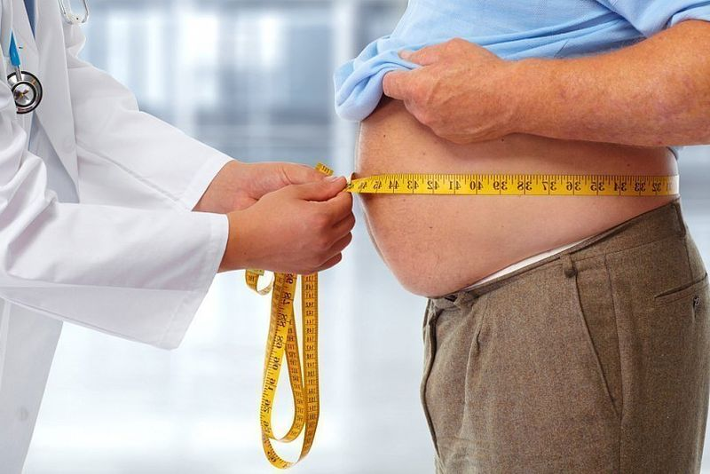

DIABETUL DE TIP 2. CUM SĂ TRĂIEȘTI CU ASTA?
Bună tuturor!
Mă numesc Alex. Diabetul de tip 2 (DZ 2) a fost descoperit la mine la 43 de ani. La 45 am reușit să mă vindec și acum vreau să le spun tuturor cum este posibil asta la domiciliu fără supravegherea medicilor.
Cum a început totul
După 40 de ani, am început să mă recuperez rapid. Vârsta medie nu diferă în activitate, așa că nu mi-a venit nici măcar în minte să asociez obezitatea cu boala.
Somn slab, sete frecventă și fără motiv, gură uscată, am dat vina pe excesul de greutate. Când vederea scăzută a fost adăugată la acest set, am început să fiu descurajat - sunt încă foarte tânăr!

Chestiune de şansă
Timpul trecea, greutatea a continuat să crească, iar eu - să rămân în ignoranţă cu privire la boala mea. Cazul a schimbat totul. Când am început un lucru nou, trebuia să trec printr-o comisie medicală unde s-a dovedit că obezitatea este cauzată de diabet.
Am fost trimis la endocrinolog, dietetician și oftalmolog. Fiecare medic și-a dat recomandările și toate li s-a părut o pedeapsă: pastile cu pumnul, o dietă strictă, un control constant al zahărului și al greutății…
Am încercat sincer să respect toate recomandările medicilor. Am luat medicamente, am redus cantitatea de alimente dăunătoare la cel mai mic minim posibil, am încercat să fac sport.
Schimbările forțate în ritmul vieții ar fi trebuit să mă înveselească, pentru că nu m-am dus niciodată la sport și cu atât mai mult nu am urmat o dietă. Dar nu m-am simțit mai bine. M-am simțit ca un sclav al bolii și am făcut totul doar pentru că mi-era frică de efectele diabetului.

În coșmarurile mele, am visat amputarea picioarelor, cum am devenit dependent de insulină și forțat să-mi fac injecții, pe care mi-e frică până la moarte. La un moment dat, mi-am dat seama: dacă nu câștig acest război cu diabetul, mă va învinge. Și am luat-o razna.
O anumită furie m-a făcut să scap de greutate, să renunț la desert și, în loc de o masă delicioasă obișnuită, să-mi bag iarba și cerealele fără gust. Zahărul a revenit la normal, eram sigur că am ajuns deja la finalul victoriei!
Dezamăgire
După șase luni, m-am întors la doctor pentru a auzi că «sunt liber de diabet». Dar, în loc de încurajator «acum sunteți sănătoși, puteți continua viața obișnuită», am primit un uscat: «zahăr în limitele normale, recomandările vor rămâne aceleași, dar vă voi prescrie un nou medicament».
Totul s-a schimbat în interiorul meu. În primul rând, nu a fost prevăzută o slăbire în dietă. În al doilea rând, o treime din salariul meu a fost cheltuită deja pentru pastile. Și acum doctorul mi-a prescris medicamente mai scumpe și mi-a dat de înțeles: vreți să trăiți - veți lua medicamente.

Am fost lovit de un val de disperare. Să lucrez pentru tot restul vieții pentru pastile, să limitez la alimente delicioase fără să simt plăcerea vieții, nu se încadra deloc în planurile mele. Prin urmare, după sentimentul de descurajare, am decis să scuip pe toate recomandările medicului și eram dispus să fac lucruri rele.
Tibet, impresii și vindecare
Primul lucru pe care am vrut să-l fac este să plec într-o călătorie. Mi-am strâns toate economiile și am plecat în Tibet. Pe lângă experiențele de călătorie de neuitat, am făcut o grămadă de întâlniri interesante, printre care se aflau oameni de orice categorie socială.
Unul dintre ei s-a dovedit a fi un tip mișto care a scăpat de diabet cu câțiva ani în urmă, fără nici o clinică și restricții. Denis a avut diabet din copilărie, iar la 35 de ani a participat la un studiu clinic al unui nou medicament, care în ultimii 10 ani a dezvoltat un remediu pentru a reduce zahărul din sânge.
Medicamentul și-a confirmat eficacitatea în toate testele și a intrat în vânzare sub denumirea comercială . Un nou prieten a insistat să iau cursul de acest remediu. Cuvintele lui au sunat atât de convingătoare încât m-am hotărât.

Produsul este complet natural, certificat, nu are contraindicații și efecte secundare, așa că nu era nimic de temut.
Vindecare
Am avut experiență în tratarea cu medicamentele, așa că nu am avut speranțe deosebite. De dragul experimentului am intenționat să nu mă limitez la alimente, și nu am așteptat niciun miracol. Și s-a întâmplat.
În primele câteva săptămâni de administrare, toate simptomele diabetului s-au stins. Am continuat să beau multă apă, dar nu mai era senzație de zahăr în gură. Amețeli și dureri de cap au dispărut, am început să dorm și, în general, m-am simțit mult mai treaz.
Chiar am început să slăbesc. Aceasta a fost o veste la fel de bună ca și cea rea, deoarece scăderea bruscă a greutății ar putea vorbi despre agravarea bolii. Temerile m-au împins să vizitez medicul din nou.

Când am dat din nou toate analizele, medicul a declarat: «Sănătos ca un taur. De ce vă plângeți?». Chiar m-am pierdut cu răspunsul. Am spus că am fost diagnosticat cu diabetul de tip al doilea, am efectuat recomandările medicului, nu m-a ajutat. M-am dus în vacanță, m-am întors sănătos.
În practica mea, este un caz rar, dar nu unic. Uneori, diabetul este vindecat complet. Dumneavoastră, cel mai important, nu vă mai neglijați. Am jurat că voi urmări nutriția și am glumit ciudat că sper că nu ne vom mai întâlni.
De atunci au trecut 6 ani. Din când în când, măsor zahărul pe stomacul gol, după masă. De-a lungul anilor, doar de două ori pe glucometru am văzut 6,9 și 7,2. Deci, cu toată încrederea, pot spune că am învins diabetul. Și toate acestea datorită lui Denis și .
Unde să obțină
De câteva ori am întâmplat să cumpăr produse contrafăcute în farmacii, de aceea nu sfătuiesc pe nimeni să ia de acolo. Este mai bine să faceți acest lucru pe site-ul producătorului - există exact produsul original. Mai ales până la va exista o promoție, va putea fi cumpărat cu o reducere de 50% .


Sănătatea tuturor!